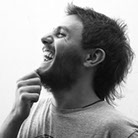

Curriculum Vitae
Gonzalo di Lorenzo
28 de Setiembre, 1985 - Montevideo, Uruguay
Inicio
Educación
Experiencia
Información Personal

Información de Perfil
Diseñador Gráfico/Web enfocado en diseño UI/UX.
Idiomas:
Inglés, Italiano.